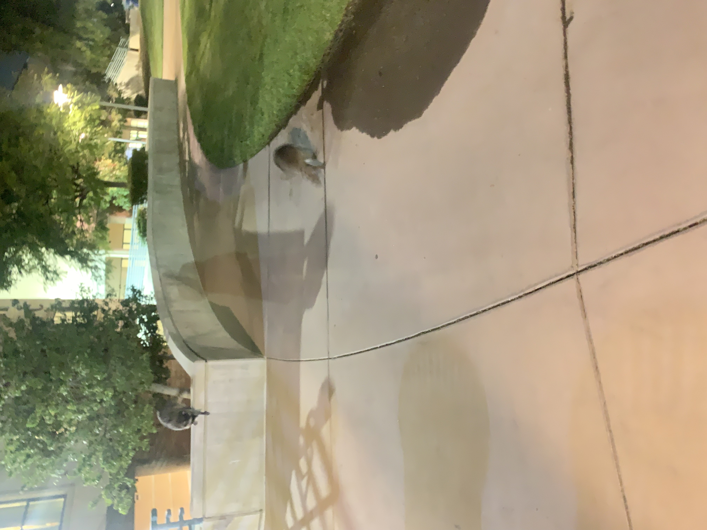
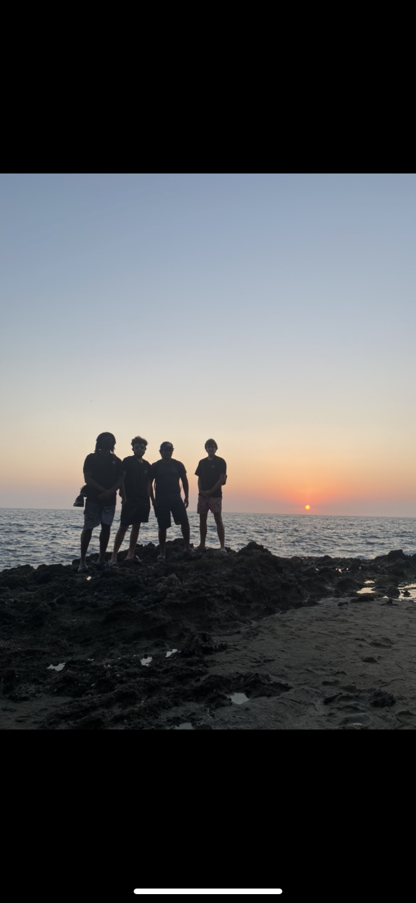
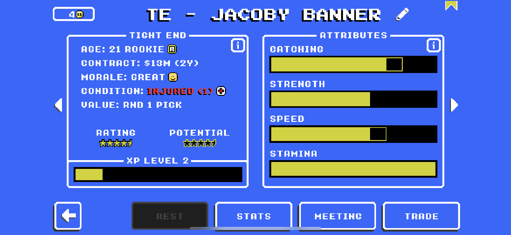
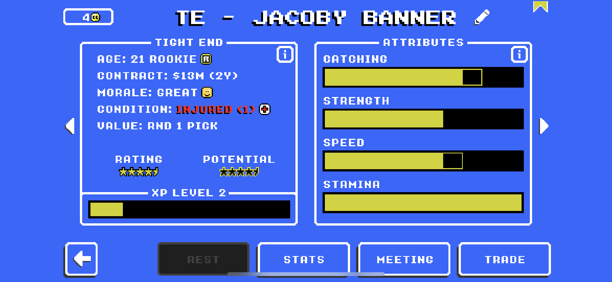
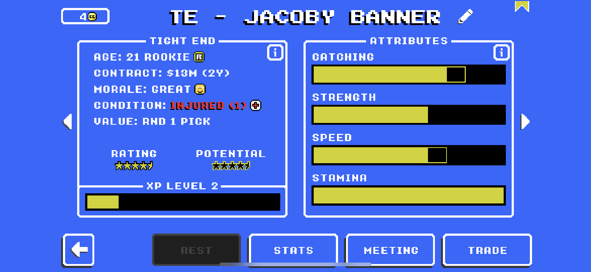

George bernal
Student at University of California Riverside
Estoy muy emocionado por graduarte de la escuela preparatoria, pero también estoy triste porque todos mis amigos vamos por nuestros caminos. Tengo una excelente memorias con mis amigos y profesores. Además estoy feliz porque viviré en otro lugar. Conocer gente nueva y estar lejos de mi casa me suena increíble. Una memoria que yo recuerdo es durante mi primer año cuando tuvimos un partido de fútbol americano en Canyon y ganó después de perder en el principio. Fue una experiencia increíble e hizo muchos amigos que todavía tengo. Todos estábamos tan felices y fue un gran momento que no he olvidado.
Estoy nervioso por este gran cambio, pero estoy emocionado por el futuro. En el futuro ya sea quiero ser un hombre empresa o un policía. Planeo usar mi grado para ayudarme con mis futuras opciones de trabajo. Extraño la escuela preparatoria y todos mis amigos y profesores pero no puede esperar para comenzar el resto de mi vida.
Estoy muy emocionado por graduarte de la escuela preparatoria, pero también estoy triste porque todos mis amigos vamos por nuestros caminos. Tengo una excelente memorias con mis amigos y profesores. Además estoy feliz porque viviré en otro lugar. Conocer gente nueva y estar lejos de mi casa me suena increíble. Una memoria que yo recuerdo es durante mi primer año cuando tuvimos un partido de fútbol americano en Canyon y ganó después de perder en el principio. Fue una experiencia increíble e hizo muchos amigos que todavía tengo. Todos estábamos tan felices y fue un gran momento que no he olvidado.
Estoy nervioso por este gran cambio, pero estoy emocionado por el futuro. En el futuro ya sea quiero ser un hombre empresa o un policía. Planeo usar mi grado para ayudarme con mis futuras opciones de trabajo. Extraño la escuela preparatoria y todos mis amigos y profesores pero no puede esperar para comenzar el resto de mi vida.
Experience
Covid Testing Clerk
• Served as a clerk checking people in for Covid testing
• Worked in many local schools in my area
• Experience with the public and public relations
Teaching Assistant
• First year undergraduate student
• Currently in the pre-business program
• Looking to go to Business admin
• All online classes as of now
Education
UC Riverside
University of California Riverside
University of California Riverside Pre Business
Portfolio


 

